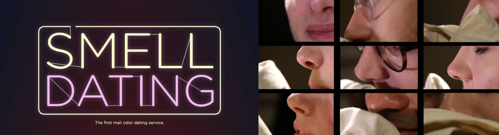
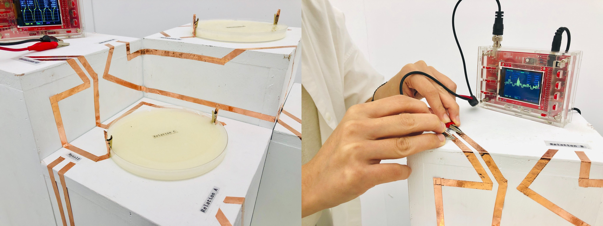

Enzymatic Reaction Testing
Biochemical Conductivity
Material Prototyping
Speculative Design
Wet Media
Relation Test explores saliva as a biochemical interface capable of revealing invisible forms of connection. Instead of treating bodily fluids as clinical data, the project reframes saliva as a relational material whose enzymatic reactions can activate or alter conductive surfaces. The work investigates how biological presence can imprint itself onto matter, proposing a speculative design approach where intimacy, contamination, and mutual influence become aesthetic and conceptual triggers. By using bodily chemistry to generate signals, the project challenges the separation between organism and material, asking how relationships might be sensed, measured, or visualized beyond language.
The experiment prototypes a series of material samples coated or embedded with conductive compounds that respond to enzymatic activity in human saliva. When saliva interacts with the surface, biochemical reactions alter conductivity or electrical behavior, producing measurable patterns. These changes are captured and visualized through custom sensors, simple circuitry, or material discoloration.
Rather than seeking stable or scientific outputs, the project embraces variability—treating each reaction as a relational event shaped by the unique biological profile of the participant. Through iterative testing, material tuning, and speculative scenarios, Relation Test positions bodily chemistry as an active agent in shaping intersubjective and material narratives.
